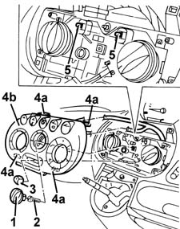

5020B28 air conditioner symbol light bulb/s - includes control panel r+r
- Path
- Procedures > 50 AUXILIARY UNITS > 5020 HEATER > 5020B heater controls > 5020B28 air conditioner symbol light bulb/s - includes control panel r+r
- Kind
- repair procedure (removal / refitting; the operation number is the code)
- Applies to
- all engines; all production periods
- Interactive page
- https://sloeber94.github.io/elrnDB-fMltpl/en/#/2891787
Applies to: all engines; all production periods
 Removing
Removing
 Refitting
Refitting2125C24 gear lever knob - r + r
1. Remove the fan control knob.
2. Undo the bolt.
3. Remove the recirculation control lever knob.
4. Release the retainers (4a) and move the cowling (4b) slightly.
5. Extract the control light bulbs. (Press fit)

Applies to: all engines; all production periods
Refitting
RemovingCheck that the bulbs are working properly.
Fit the control light bulbs.
Position the cowling and engage the retainers.
Fit the recirculation control lever knob.
Tighten the bolt.
Fit the handle.
Fit the fan control knob.
2125C24 gear lever knob - r + r
Test the operation of the ideogram light bulbs.